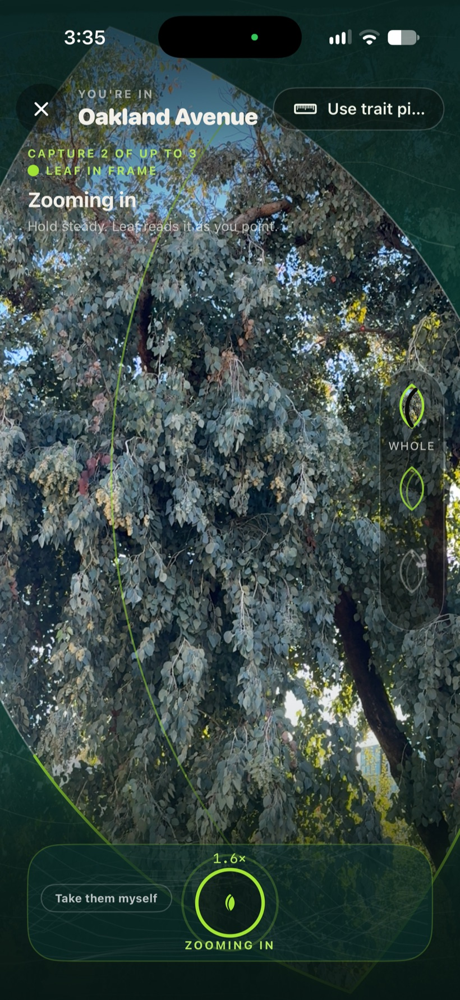
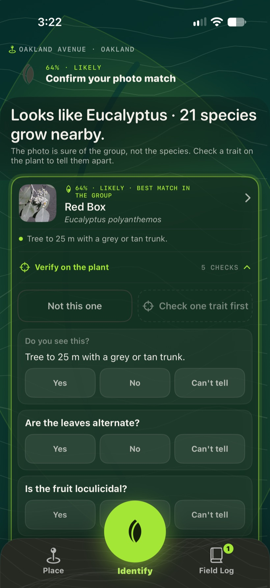
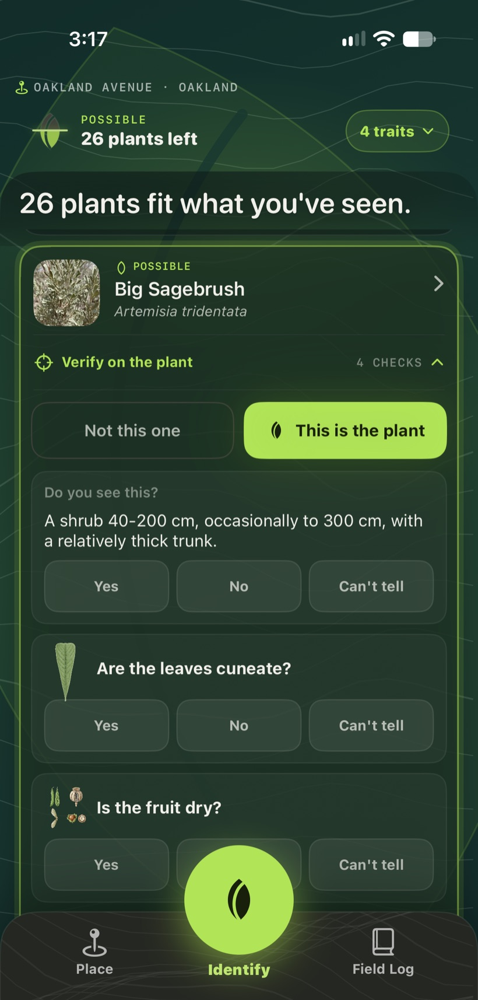
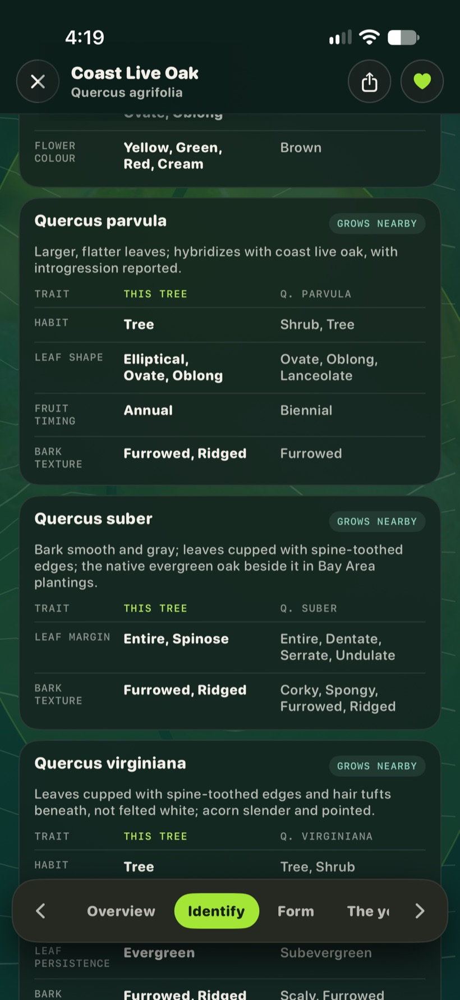
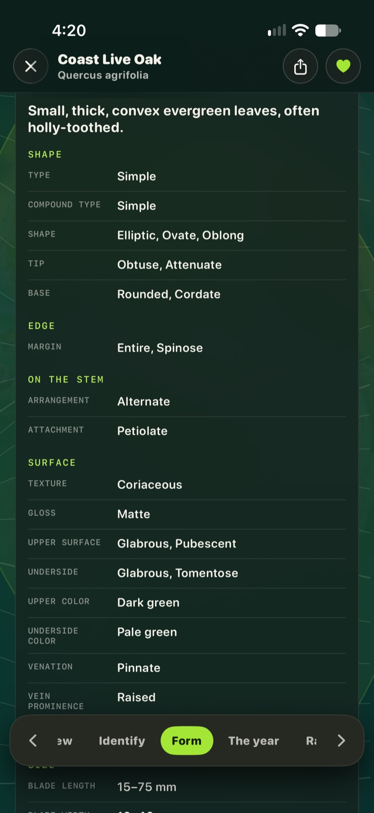
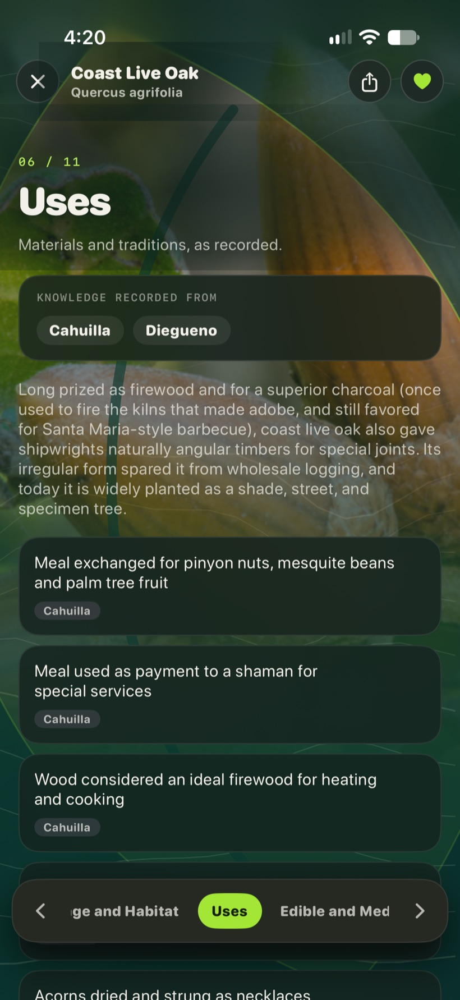
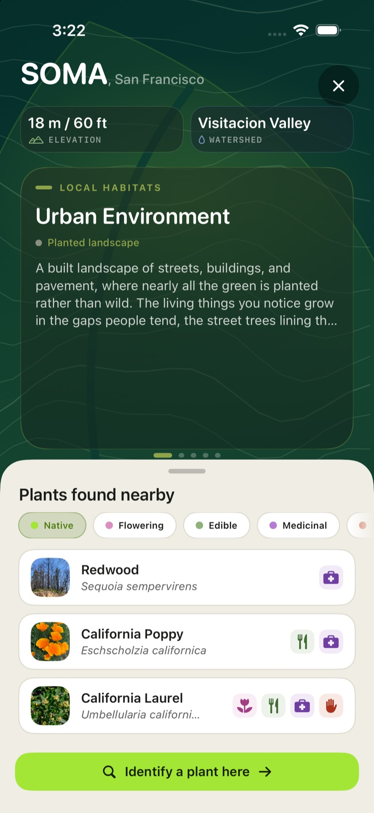

The plant at a glance
Photos, its names, whether it's native, and badges for edible and medicinal plants. A short description, quick facts such as height and lifespan, and what sets it apart from its relatives.
Point your camera at a plant. Leaf matches it to a species or a genus, then asks what only your eyes can settle: the leaf, the flower, the fruit. When you've made the call, every plant opens into a rich profile: what sets it apart, where it grows, how people have used it, how to stay safe around it, and how to grow it.
Requires an iPhone and being in California.
No account. Your photos are read on your phone, and your finds stay in a field log on your phone.
Built for trails and back roads. Leaf keeps working well when network coverage is spotty.
Identify as many plants as you like. No daily caps, no counting.
Identifying plants and reading every profile is free, always. No ads, ever.
A photo can tell an oak from a pine. It often can't tell one oak from the next. Leaf matches your photos to a species when it can and to a genus when it can't, then guides your own observations to land the identification, using only the plants that grow where you're standing.
Frame a plant in the leaf and tap Identify. Leaf takes up to three photos, from the whole plant to a close-up, zooming in on its own, and reads them as you point.
It matches the photos to the plants that grow here: to a species when it's sure, otherwise to a genus.


When the photos match a genus, Leaf says so and how many of its species grow nearby. Here it's a eucalyptus, with 21 kinds in the watershed; guided observations land the species.
Leaf guides you to look at one thing at a time, always the one that splits the remaining plants best. Are the leaves wedge-shaped at the base? Is the fruit dry? Each answer drops the plants that don't fit.
Every question comes with a drawing, and you can answer "Can't tell". The count of plants that still fit goes down as you go.


Open a candidate and check it against your plant: its size and habit, its leaves, its fruit, side by side with photos and its look-alikes.
You decide. "This is the plant" saves it to your field log with the place and date; "Not this one" moves you to the next candidate.

Every identified plant opens into its profile, page after page a swipe apart, from what sets it apart to who has eaten it and how to grow it. The pages are below.

Over 12,500 California plants have a full profile today. Here are the pages of one of them, the Coast Live Oak.
Photos, its names, whether it's native, and badges for edible and medicinal plants. A short description, quick facts such as height and lifespan, and what sets it apart from its relatives.

The plants it's most often confused with, especially the ones growing near you, compared trait by trait: habit, leaf shape, margin, fruit timing, bark.

Leaves, flowers, fruit and seed, stem and bark, one at a time, with every recorded trait grouped by what you'd look at: shape, edge, surface, size. Hand-lens details sit behind a setting.

When it flowers and when it fruits, month by month, with today's month marked so you know what to look for now.

A map of every watershed it's been recorded in, the elevations it grows at, the habitats it favors, its climate, and its native range.

Its uses beyond food and medicine, from firewood and timber to ceremony and trade, with each record naming the people whose knowledge it is.

How the plant has been prepared, step by step, with each record naming the people who used it. Traditional uses are recorded as history, never as a recommendation.

Whether it's toxic and how seriously, for people and for pets and livestock, which parts, and the signs of poisoning to recognize. Shown here on Four O'clock.

Water, light, soil and pH, drought and shade tolerance, maintenance, and how it's propagated, with an overview of how it's grown.

The family line from family to variety, the relatives that grow near you, its other names, and the plants it grows beside.
A dozen or more photos of many plants, with botanical drawings, every one credited to its photographer and licence.
Leaf knows your elevation and watershed, the park you're in, and the habitats and plant communities around you, and it lists the plants recorded nearby, with filters for natives, flowering plants, and plants that are edible or medicinal. Identification only considers plants that grow where you are. Discover how this land's first people found use of the plants found here.

Every trait and fact in Leaf traces to an authoritative, peer-reviewed flora, such as the Flora of North America. Software chooses which question to ask next; the botany itself comes from the sources.
Over 12,500 California plants have full profiles today, with more added every week. Natives are its strength; houseplants its weak spot, for now.
Leaf improves through feedback from people using it. The only request is that you use the app and send feedback at least once. A weekly email announces new builds with what's fixed and what's new. The beta runs about 90 days.